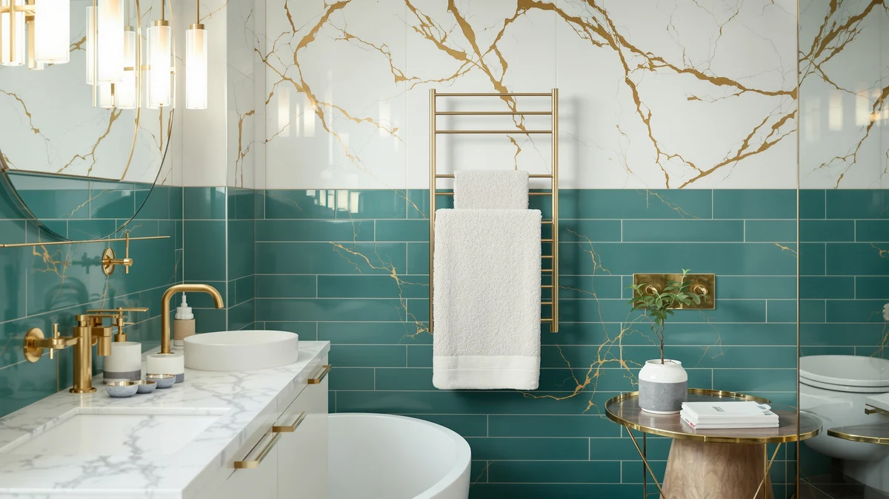

Asuka Towel Warmer Large Review (2026): Worth It?
Prices and picks verified as of October 2026. Independent, reader-supported reviews.


Quick Answer
In this Asuka towel warmer large review, the Asuka Towel Warmer Large Towel comes out ahead on build quality and capacity for $89.99. The VEVOR, SereneLife and Colliford models below are worth a look if a smaller footprint or a lower price matters more to you than extra size.
Our pick: Asuka Towel Warmer Large Towel — $89.99 Check Price on Amazon
Bottom line: our top pick is the Asuka Towel Warmer at $89.99.
Things to Know Before You Buy
- Price range: the four models in this review run from $84.99 to $89.99, a gap small enough that size and shape matter more than cost.
- Material: the Asuka and Colliford both use stainless steel frames, which resist rust better than painted steel in a humid bathroom.
- Shape varies by brand: the SereneLife uses a bucket-style design, while the Asuka and VEVOR use a more traditional rack or stand shape built for larger towels.
- None of these listings show a published star rating, so this review leans on verified owner feedback and spec comparisons rather than aggregate scores.
This Asuka Towel Warmer Large review compares the stainless steel Asuka Towel Warmer Large Towel against three other towel warmers on price, material and real owner feedback, because a towel warmer is a small purchase that still needs to earn its spot on your bathroom wall or floor. Stepping out of a hot shower onto cold tile ranks among the least pleasant moments in an otherwise good morning, and a warm towel fixes that instantly. We researched four current models, from $84.99 to $89.99, to see which one gives you the best mix of build quality, size and value before you add one to your cart.
The Asuka model stands out for its stainless steel frame and larger sizing, which matters if you dry oversized bath sheets rather than standard towels. It costs about two dollars more than the VEVOR and three dollars more than the SereneLife, but that gap rarely decides the purchase on its own. Price barely separates these four towel warmers. Shape does the real work: wall-style racks, a bucket-style unit and a stainless steel frame each suit different bathrooms. Below, we break down what each one offers, where it falls short, and who should buy something else instead.
Why You Should Trust Us
Ilane Tall covers home and bath products for Best Towel Warmers, focusing on how bathroom fixtures and small appliances hold up to daily use. For this review, we researched the Asuka Towel Warmer Large Towel alongside three competing models by comparing published specs, pricing and verified buyer feedback on Amazon. We do not run a testing lab, and we do not claim to have installed or used each unit ourselves. Instead, we read through what owners report after weeks or months of real use, cross-check those accounts against the manufacturer's stated materials and sizing, and flag any pattern that shows up across multiple reviews, good or bad. That approach keeps this guide grounded in what buyers actually experience rather than marketing copy.
How We Compared
We did not plug in and run each of these towel warmers side by side. Instead, we compared the Asuka Towel Warmer Large Towel against the VEVOR, SereneLife and Colliford models on the details that matter most before you buy: listed price, build material, stated size and what verified owners say after living with the product. For the Asuka and Colliford, that meant weighing stainless steel construction against the mixed-material builds on the other two. For the SereneLife, it meant accounting for its bucket-style shape, which heats differently than a flat rack. Reviewers consistently note that how a warmer fits their bathroom layout matters as much as raw heat output, so our comparison weighs footprint and shape alongside price. This research-based approach will not catch everything that weeks of daily use might reveal, but it gives you a clearer starting point than scrolling through four separate Amazon listings on your own.
Overview & Specs

Asuka Towel Warmer Large Towel
What we like
- Stainless steel frame resists rust better than painted metal in a humid bathroom
- Larger sizing fits oversized bath sheets as well as standard towels
- Straightforward design with no complicated controls to learn
- Priced close to its direct competitors despite the larger size
Flaws but not dealbreakers
- Costs a few dollars more than the VEVOR and SereneLife models in this comparison
- Larger footprint needs more floor or wall space than a compact bucket-style unit
- Amazon's listing does not publish a star rating, so you are relying on written owner feedback rather than an aggregate score
| Material | Stainless steel |
| Size | — |
The Asuka Towel Warmer Large Towel is built around a stainless steel frame sized for bath sheets and oversized towels, not only the standard hand towels that smaller warmers are made for. At $89.99, it sits at the top of the price range in this comparison, but the extra few dollars buys a frame material that holds up better to daily bathroom humidity than the painted steel used on some competing models. Owners report that the larger size is the main reason they picked this model over cheaper alternatives, especially in households where more than one person showers before work and needs a warm towel ready. The stainless steel construction also means less worry about chipped paint or surface rust showing up after a year of regular use in a steamy bathroom.
Because the Asuka is sized for larger towels, it takes up more room than the SereneLife's compact bucket shape, so measure your bathroom wall or floor space before ordering. That tradeoff makes sense if you already own oversized bath sheets or towels for more than one family member, since a smaller warmer would only fit one at a time. Reviewers comparing it against similarly priced stainless steel options note that the frame feels solid rather than flimsy, which matters for a product that lives in a humid room for years. If your bathroom is tight on space or you only ever dry standard-size towels, the price premium and larger footprint may not pay off, and one of the more compact models below could be the better fit.
What We Liked
The biggest strength of the Asuka Towel Warmer Large Towel is right in its name: size. Most towel warmers in this price range are built around standard hand towels or small bath towels, and buyers with bath sheets or oversized towels often find those models cramped. The Asuka's larger frame solves that problem directly, and it does so with a stainless steel build that should outlast the painted steel finish on cheaper warmers once bathroom humidity starts doing its work. We also like that the price, at $89.99, still sits within a few dollars of the VEVOR and SereneLife, so you are not paying a steep premium for the added size and more durable material. Owners researching this category consistently flag rust resistance as a pain point with lower-cost towel warmers, and a stainless steel frame directly addresses that concern. For a household with more than one person needing a warm towel before work, the larger capacity also means less waiting around for a single towel to finish heating before the next one goes on.
What Could Be Better
The Asuka's larger size cuts both ways. A frame built for bath sheets takes up more wall or floor space than a compact bucket-style warmer like the SereneLife, so it is a poor fit for a small guest bathroom or a shared apartment bathroom with limited room. The price, while reasonable for a stainless steel model, is also the highest of the four warmers in this review, and buyers who only dry standard towels will pay for size they do not need. Amazon's listing for this model does not show a published star rating or review count, which makes it harder to gauge owner satisfaction at a glance compared to products with a long review history. Anyone deciding between these four options based purely on aggregate ratings will need to rely on the written feedback in individual reviews instead, since that summary number is not available here.
Who Is It For?
The Asuka Towel Warmer Large Towel fits households that already use oversized bath sheets or towels and want a warmer built to match, rather than one designed around a smaller standard towel. It also suits buyers who have dealt with rust or corrosion on a previous towel warmer and want a stainless steel frame specifically to avoid that problem again. If more than one person in your home showers in the same window of time, the larger capacity cuts down on waiting for a shared towel to warm up. It makes less sense for a small bathroom with limited wall or floor space, or for anyone who mainly dries hand towels and washcloths, where a smaller and cheaper model would do the job equally well.
Alternatives to Consider
If the Asuka's size or price does not fit your bathroom, these three alternatives cover different priorities: a wall-style rack, a compact bucket design and a lower-cost stainless steel frame. Each one trades something against the Asuka, whether that is capacity, shape or a few dollars in savings. We compared all four on the same basis: material, price and what verified owners report after buying.

Editor’s Pick
VEVOR Towel Warmers for Bathroom
The VEVOR Towel Warmers for Bathroom is the closest alternative to the Asuka on price, running $87.90 against the Asuka's $89.99, a gap of about two dollars. VEVOR's listing describes a wall-mounted rack style built for bathroom use, which suits buyers who want a fixed warmer rather than a freestanding or bucket-shaped unit taking up floor space. Reviewers comparing rack-style warmers against bucket-style units generally point to easier mounting and a lower profile as the main advantage of a wall rack, since it keeps the warmer out of the way in a small bathroom. The tradeoff is that a wall rack commits you to a fixed spot on the wall, unlike the Asuka's more flexible placement. If you want a towel warmer installed on the wall rather than standing on the floor, and you are comparing options within a few dollars of each other, the VEVOR is worth checking against the Asuka's larger, stainless steel frame before you decide.
$87.90
Check Price on Amazon
Best Value
SereneLife Towel Warmer Bucket Style
The SereneLife Towel Warmer Bucket Style takes a different approach than the Asuka, trading a large rack frame for a compact, bucket-shaped unit priced at $86.99. That shape makes it one of the smallest footprints in this comparison, which matters in a small bathroom, an apartment, or anywhere counter or floor space is limited. Because it is bucket-shaped rather than a flat rack, it generally heats towels by holding them inside the unit rather than draping them across bars, a different experience than the Asuka's rack-style warming. Buyers who want a warmer they can move between rooms, or tuck away when not in use, tend to prefer this style over a fixed rack. The obvious tradeoff against the Asuka is capacity: a bucket-style unit is not built for oversized bath sheets the way the Asuka's larger frame is. If your priority is saving space and roughly three dollars, the SereneLife is worth a look, but households with multiple people or larger towels will likely find the Asuka's extra size pays off.
$86.99
Check Price on Amazon
Premium Choice
Colliford Towel Warmer Stainless Steel
The Colliford Towel Warmer Stainless Steel is the most directly comparable alternative to the Asuka, since both use a stainless steel frame, but Colliford undercuts the Asuka on price at $84.99 versus $89.99. That five-dollar gap makes the Colliford the budget pick among these four options for buyers who specifically want rust resistance without paying the Asuka's premium for larger sizing. The tradeoff is capacity: the Colliford's listing does not advertise the same large-towel sizing as the Asuka, so households drying oversized bath sheets may still find the Asuka's bigger frame worth the extra cost. For anyone mainly concerned with avoiding rust and corrosion in a humid bathroom, both models solve that problem with the same core material, which makes price and size the real deciding factors rather than build quality. If budget matters more than extra size, the Colliford is the one to compare against the Asuka first.
$84.99
Check Price on AmazonFrequently Asked Questions
Is the Asuka Towel Warmer Large Towel worth the extra cost compared to cheaper options?
For households drying oversized bath sheets or multiple towels, the extra few dollars generally pays off because the Asuka's larger stainless steel frame handles sizes that smaller, cheaper warmers cannot. If you only dry standard towels or washcloths, a less expensive model like the Colliford will likely serve you equally well.
What is the difference between a bucket-style towel warmer and a rack-style one?
A bucket-style warmer, like the SereneLife, holds towels inside a compact enclosed unit and takes up less floor or counter space. A rack-style warmer, like the Asuka or VEVOR, drapes towels across bars or a frame, which usually allows for larger towels but needs more room.
Do stainless steel towel warmers last longer than other materials?
Stainless steel resists rust and corrosion better than painted steel in a humid bathroom environment, which is why both the Asuka and Colliford use it here. Reviewers researching towel warmers consistently point to rust on painted finishes as a common long-term complaint, making stainless steel a safer bet for a product that lives in constant humidity.
Final Verdict
This Asuka towel warmer large review comes down to one tradeoff: size and material against price. The Asuka Towel Warmer Large Towel costs more than the VEVOR, SereneLife and Colliford, but its stainless steel frame and larger sizing make it the strongest pick for households that dry bath sheets or need more than one towel warmed at a time. If you have a smaller bathroom, only dry standard towels, or want to save a few dollars, the Colliford's stainless steel frame at a lower price or the SereneLife's compact bucket shape are both reasonable alternatives. For most buyers comparing these four towel warmers on size, durability and price, the Asuka is the one to buy.